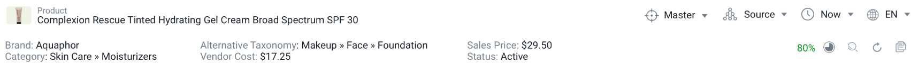

<link rel="import" href="../rock-layout/rock-layout.html">
<link rel="import" href="../rock-layout/rock-header/rock-header.html">
<link rel="import" href="../rock-layout/rock-sidebar/rock-sidebar.html">
<link rel="import" href="../rock-layout/rock-titlebar/rock-titlebar.html">
<link rel="import" href="../rock-tabs/rock-tabs.html">
<link rel="import" href="../rock-layout/rock-titlebar/rock-titlebar.html">
<link rel="import" href="../pebble-stepper/pebble-stepper.html">
<link rel="import" href="../pebble-stepper/pebble-step.html">
<link rel="import" href="../rock-entity-header/rock-entity-header.html">
<link rel="import" href="../rock-dimension-selector/rock-dimension-selector.html">
<link rel="import" href="../pebble-vertical-divider/pebble-vertical-divider.html">

<dom-module id="app-entity-manage">
  <template>
    <style include="pebble-shared-styles"></style>
      <style>
      .content {
        padding: 5px;
      }
      .stepper-style {
        --connected-badge-width: 50px;
        --connected-badge-height: 50px;
        --connected-badge-background: green;
        --connected-childBadge-width: 18px;
        --connected-childBadge-height: 18px;
        --connected-childBadge-background: blue;
        --connectorLine-width: 3px;
        --divider-color: #212121;
      }
      .sidebar-title {
        font-weight: 500;
        font-family: 'Roboto', 'Helvetica Neue', Helvetica, Arial, sans-serif;
        clear: both;
        padding: 10px;
        margin: 0px;
        font-size: 20px;
      }
      rock-dimension-selector {
        --dimesion-selector-catalog-dropdown: {
          width: 80px;
        }
        ;
        --dimesion-selector-source-dropdown: {
          width: 85px;
        }
        ;
        --dimesion-selector-date-dropdown: {
          width: 60px;
        }
        ;
        --dimesion-selector-locale-dropdown: {
          width: 70px;
        }
        ;
      }
      
      #dimensionContainer {
        align-self: center;
        margin-bottom: 12px;
        width: 100%;
      }
      
      pebble-vertical-divider {
        --pebble-vertical-divider-color: black;
        min-width: 0px;
        margin: 5px 0px;
      }
    </style>
      
      <rock-layout>
        <rock-titlebar icon="dashboard" title="duummy org > dummy container > dummy category > dummy entity" sub-title="dummy product" closable minimizable>
          <div id="dimensionContainer" align="right">
          <iron-ajax auto url="../../data/EntitySearchApp/dimensionData.json" handle-as="json" last-response="{{dimensionData}}"></iron-ajax>
          <rock-dimension-selector config-data="{{dimensionData}}"></rock-dimension-selector>
        </div>
        <pebble-vertical-divider></pebble-vertical-divider>
        </rock-titlebar>
          <rock-header frozen>
            <div class="fixed-content">
              <!---->
              <iron-ajax url="headerConfig.json" last-response="{{headerConfig}}" auto></iron-ajax>
              <iron-ajax url="toolbar.json" last-response="{{tollbarButtons}}" auto></iron-ajax>
              <iron-ajax url="profile.json" last-response="{{warnings}}" auto></iron-ajax>
              <rock-entity-header header-config="[[headerConfig]]" buttons="[[tollbarButtons]]" profile="[[warnings]]"></rock-entity-header>
            </div>
            <!--<div class="shrunk-content">
                
            </div>-->
          </rock-header>
          <rock-sidebar position="right">
            <div>
              <span class="sidebar-title">Create & Manage Variants</span>
              <iron-ajax auto url="../../data/app-entity-manage-stepper-data.json" handle-as="json" last-response="{{_stepItems}}"></iron-ajax>
              <pebble-stepper vertical selected-step = 1 child-selected-step = 0>
                <template is="dom-repeat" items="{{_stepItems.items}}" as="item">
                  <pebble-step class="stepper-style" data="{{item}}"></pebble-step>
                </template>
              </pebble-stepper>
            </div>
          </rock-sidebar>
          <div class="content">
            <rock-tabs config="{{_tabConfig}}">
            </rock-tabs>
            <iron-ajax auto url="../../data/app-entity-manage-tab-config.json" handle-as="json" last-response="{{_tabConfig}}"></iron-ajax>
          </div>
      </rock-layout>

  </template>

  <script>
    (function() {
      'use strict';

      Polymer({
        is: 'app-entity-manage',
        ready: function(){
          
        },
        properties: {
          _tabConfig: {
            type: Object,
            value: function(){
              return {};
            }
          },
          _stepItems: {
            type: Object,
            value: function(){
              return {};
            }
          }
        }
      });
    })();
  </script>

</dom-module>